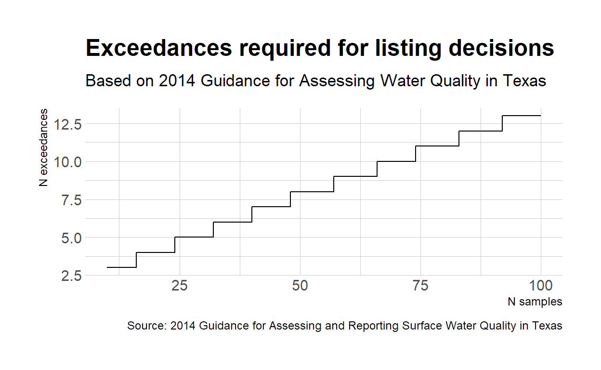

Use the binomial test to evaluate water quality compliance.
In the previous post, I used a geometric mean to assess water quality compliance. According to EPA guidance, this is appropriate for assessing bacteria levels in water bodies. For other conventional parameters, we can determine compliance when a standards violation is unlikely to occur more than 10% of the time. Using EPA guidance, we have both a test statistic (proportion of exceedances) and rejection region (>10%). We assume that each water quality sample is a sample from the population that represents the water body with unknown probability (\(p\)) of exceeding the criterion. Therefore, the null hypothesis:
\[H_0 : \pi \le p_0\]
where \(p_0\) is the acceptable exceedance rate and equals 0.1. By transforming measurements below the criterion to 0 (failure), and measurements above the criterion as 1 (success) we can apply a simple binomial test to samples collected during the assessment period to evaluate current compliance. Smith et. al (Smith et al. 2001) discuss the binomial approach in detail.
In the example below, I am importing grab dissolved oxygen at two stations on water body. Some events utilize two or more samples at varying depths, those samples are averaged to determine the event dissolved oxygen value.
library(readr)
library(dplyr)
library(ggplot2)
file <- url("https://gist.githubusercontent.com/mps9506/274e0debee7e7f1289dac3371ce05d1e/raw/284ff43565d03bd57c59c3151feaa739abd40f2e/1501_DO.txt")
df <- read_delim(file, "|")
df <- df %>%
#select(`RFA(Sample Set ID)/Tag_id`, Segment, `Parameter Code`, Value, `End Date`, `Monitoring Type`) %>%
mutate(`End Date` = as.Date(`End Date`, "%m/%d/%Y")) %>%
filter(`Monitoring Type` == "RT") %>%
arrange(`End Date`) %>%
group_by(`End Date`, `Station ID`) %>%
summarise(Value = mean(Value))
ggplot(df) +
geom_point(aes(x = `End Date`, y = Value)) +
geom_hline(aes(yintercept = 4)) +
xlab("Sample Date") + ylab("DO (mg/L)")In order to determine if the waterbody meets the water quality criterion I select the water quality values during the assessment period and use the binom.test function in R. The arguments for binom.test are
binom.test(x, n, p = 0.5,
alternative = c("two.sided", "less", "greater"),
conf.level = 0.95)
x number of successes, or a vector of length 2 giving the numbers of successes and failures, respectively.
n number of trials; ignored if x has length 2.
p hypothesized probability of success.
alternative indicates the alternative hypothesis and must be one of "two.sided", "greater" or "less". You can specify just the initial letter.
conf.level confidence level for the returned confidence interval.So we need to first count the total number of “successes,†which in this case means water quality exceedances (DO value less than 4 mg/L). Note, that this is slightly different than worded above since we typically think of exceedance as above a water quality standard. We also need to count the total number of trials. Both of these are accomplished using dplyr and the mutate, case_when, and summarise functions.
binomial_df <- df %>%
filter(`End Date` > as.Date("2005-11-30") & `End Date` < as.Date("2012-12-01")) %>%
ungroup() %>%
mutate(
success = case_when(
Value < 4 ~ 1,
Value >= 4 ~ 0
))
binomial_df <- binomial_df %>%
summarise(n = n(), x = sum(success))
binomial_df
# A tibble: 1 x 2
n x
<int> <dbl>
1 67 15So, now we have 15 exceedances for 67 trials. This matches the values indicated on the TCEQ waterbody assessment report. (Another pdf warning!)
The hypothesised rate of success is given to us by the water quality standard, 10%. Therefore the null and alternative hypothesis are:
\[H_0 : \pi \le 0.10\] \[H_1 : \pi \gt 0.10\]
binom.test(x = binomial_df$x, n = binomial_df$n, p = 0.1, alternative = "g")
Exact binomial test
data: binomial_df$x and binomial_df$n
number of successes = 15, number of trials = 67,
p-value = 0.002213
alternative hypothesis: true probability of success is greater than 0.1
95 percent confidence interval:
0.1433629 1.0000000
sample estimates:
probability of success
0.2238806 Under this scenario, we accept reject the null hypothesis. The water body is listed as impaired for depressed dissolved oxygen according to water quality standards.
We can simplify this test by creating a table or graph depicting the number of exceedances required for a listing based on the number of samples collected. In fact, this table is provided in the TCEQ assessment guide. Using qbinom we can create a table listing the number of exceedances leading to an impairment listing:
binom_chart <- tibble(n = 10:100,
exceedances = qbinom(1-0.20, size = 10:100, prob = 0.1) + 1)
binom_chart
# A tibble: 91 x 2
n exceedances
<int> <dbl>
1 10 3
2 11 3
3 12 3
4 13 3
5 14 3
6 15 3
7 16 4
8 17 4
9 18 4
10 19 4
# ... with 81 more rows
I am also interested in visualizing the trends in exceedance probability. Using the same date-based rolling functions in the previous post, I will apply the binomal test to 7-yrs of the most recent data and plot the probability over sampling date.
library(purrr)
library(lubridate) ## import lubridate for as.duration and dyears functions
## This function will be applied to each sample,
## return the estimated probability from the previous 7-yrs of data
myfunc <- function(dates, values, years, i){
temp <- values[as.duration(dates[i] - dates)/dyears(1) <= years & as.duration(dates[i] - dates)/dyears(1) >= 0]
df <- data_frame(temp) %>%
summarise(n = n(), successes = as.integer(sum(temp)))
results <- binom.test(x = df$successes, n = df$n, p = 0.1, alternative = "g")
return(results$estimate)
}
df2 <- df %>%
ungroup() %>%
arrange(`End Date`) %>%
mutate(Success = as.integer(case_when(
Value < 4 ~ 1,
Value >= 4 ~ 0
)))
df2 <- df2 %>%
mutate(ep = map_dbl(seq_along(.$`End Date`),
~myfunc(dates = `End Date`, values = Success, years = 7, i = .x)))
df2
# A tibble: 142 x 5
`End Date` `Station ID` Value Success ep
<date> <dbl> <dbl> <int> <dbl>
1 2000-01-03 12515 6.19 0 0
2 2000-03-14 12515 6.7 0 0
3 2000-03-16 12515 6.41 0 0
4 2000-05-03 12515 4.42 0 0
5 2000-06-15 12515 4.86 0 0
6 2000-07-11 12515 4.48 0 0
7 2000-09-12 12515 5.64 0 0
8 2000-10-18 12515 8.82 0 0
9 2000-11-06 12515 5.96 0 0
10 2000-12-20 12515 12.5 0 0
# ... with 132 more rowsA little ggplot to create the figure:
ggplot(df2) +
geom_step(aes(x = `End Date`, y = ep, color = "7-yr estimated probability of exceedance")) +
geom_hline(aes(yintercept = 0.1, color = "Allowable proportion of exceedances"), size = .75) +
theme_ipsum_rc() +
scale_color_brewer(name = "", type = "qual", palette = "Set2") +
labs(
title = "Estimated probability of exceeding water quality standard",
subtitle = "Based on dissolved oxygen samples in Tres Palacios Tidal",
caption = "Source: TCEQ CRP Data Tool",
x = "Sample date", y = "Estimated probability"
)Smith, Eric P, Keying Ye, Chris Hughes, and Leonard Shabman. 2001. “Statistical Assessment of Violations of Water Quality Standards Under Section 303 (d) of the Clean Water Act.†Environmental Science & Technology 35 (3): 606–12. https://doi.org/10.1021/es001159e.
If you see mistakes or want to suggest changes, please create an issue on the source repository.
Text and figures are licensed under Creative Commons Attribution CC BY 4.0. Source code is available at https://github.com/mps9506/mschramm, unless otherwise noted. The figures that have been reused from other sources don't fall under this license and can be recognized by a note in their caption: "Figure from ...".
For attribution, please cite this work as
Schramm (2018, April 26). Michael Paul Schramm: Binomial Test for Water Quality Compliance. Retrieved from https://michaelpaulschramm.com/posts/binomial_water_quality/
BibTeX citation
@misc{schramm2018binomial,
author = {Schramm, Michael},
title = {Michael Paul Schramm: Binomial Test for Water Quality Compliance},
url = {https://michaelpaulschramm.com/posts/binomial_water_quality/},
year = {2018}
}